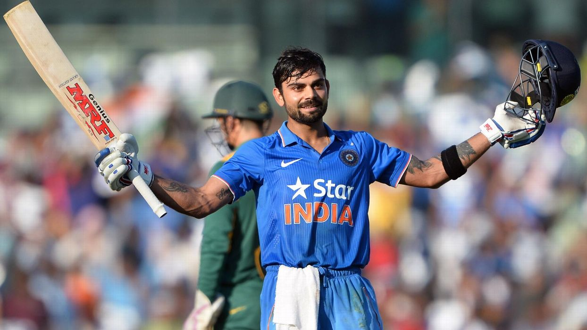

Virat Kohli
The King of Indian cricket.

Virat Kohli after scoring century his 35th century against SA in 2018.
Here's a timeline of Virat Kohli's life:
- 1988 - Virat Kohli was born on 5 November 1988 in Delhi into a Punjabi Hindu family.
- 1998 - The West Delhi Cricket Academy was created and a nine-year-old Kohli was part of it.
- 2002 - Kohli first played for Delhi Under-15 team in October 2002 in the 2002–03 Polly Umrigar Trophy. He was the leading run-scorer for his team in that tournament with 172 runs at an average of 34.40.
- 2006 - In July 2006, Kohli was selected in the India Under-19 squad on its tour of England. He averaged 105 in the three-match ODI series against England Under-19s and 49 in the three-match Test series.
- 2008 - In February–March 2008, Kohli captained the victorious Indian team at the 2008 ICC Under-19 Cricket World Cup held in Malaysia. Batting at number 3, he scored 235 runs in 6 matches at an average of 47 and finished as the tournament's third-highest run-getter and one of the three batsmen to score a hundred in the tournament.
- 2011 - Kohli played in every match of India's successful World Cup campaign. In the final against Sri Lanka at Mumbai, he scored 35, sharing an 83-run partnership with Gambhir for the third wicket after India had lost both openers within the seventh over chasing 275. This partnership is regarded as "one of the turning points in the match", as India went on to win the match by six wickets and lift the World Cup for the first time since 1983.
- 2013 - In March 2013, Kohli started a charity foundation called Virat Kohli Foundation (VKF). The organisation aims at helping underprivileged kids and conducts events to raise funds for the charity.
- 2016 - At the 2016 IPL, the Royal Challengers finished runners-up and Kohli broke the record for most runs in an IPL season (of 733 runs) by scoring 973 runs in 16 matches at an average of 81.08, winning the Orange Cap as well as Most-valuable Player Award
- 2017 - Indian cricket captain Virat Kohli was awarded the Padma Shri award by President Pranab Mukherjee at a ceremony at the Rashtrapati Bhavan
- 2019 - In April 2019, he was named the captain of India's squad for the 2019 Cricket World Cup. On 16 June 2019, in India's match against Pakistan, Kohli became the fastest batsman, in terms of innings, to score 11,000 runs in ODI cricket.
"To Become A Good Player, You Need Talent. To Become A Great Player You Need An Attitude Like Kohli."
- Former Indian Cricketer Sunil Gavaskar.
If you have time, you should read about this incredible Indian Cricketer on his Wikipedia page.